APHS 20203 • Epidemiology & Biostatistics
Are exposure and outcome associated?
More specifically:
Do people with different exposures experience different health outcomes?
Is the observed association likely to be causal, or could it reflect other explanations?
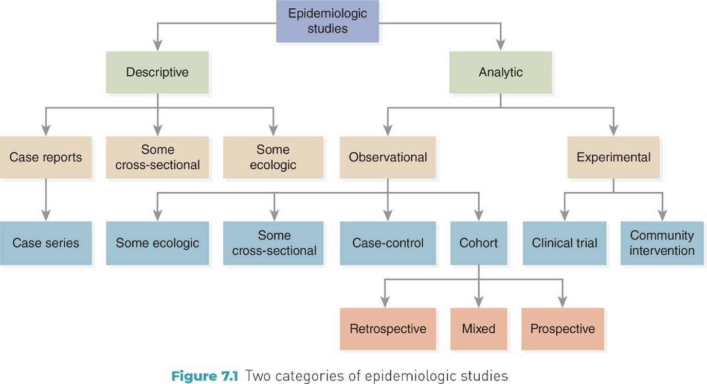
Observational design
Investigator does not assign exposure
Observes existing differences in exposure and outcome
Primary goal: identify associations
Examples include ecologic, cohort, and case-control studies
Experimental design
Investigator assigns exposure or intervention
Often uses randomization
Primary goal: evaluate causal effects
Examples include randomized controlled trials (RCTs)
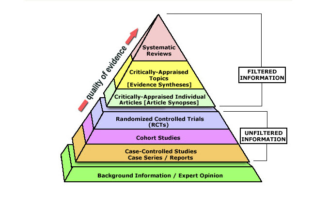
Generate Hypotheses
Establish Causality
Study designs vary in how strongly they support causal inference
Lower levels are often used to generate hypotheses
Higher levels are better suited to test causal effects
Moving up the pyramid generally means:
Greater control over alternative explanations
Stronger ability to evaluate causality
Important note:
Higher evidence does not mean “always correct,” and lower evidence does not mean “wrong.”
Analytic epidemiology asks whether an observed association reflects a causal relationship.
Step 1: Identify an association: Do exposure and outcome occur together more often than expected?
Step 2: Evaluate validity:
Internal validity: Is the association likely to be real within this study?
External validity: Can the findings be generalized to other populations?
Step 3: Consider alternative explanations
Could the association reflect chance?
Could it reflect systematic differences in how groups are compared or observed?
Could it reflect other factors related to both exposure and outcome?
Key takeaway: Study design and validity assessment determine how confidently we can move from association to inference.
Ecologic Studies: Group-level analysis
Unit of analysis: groups (not individuals)
Exposure & outcome: measured at the population level
Common use: explore population patterns; generate hypotheses
Key caution: group-level associations ≠ individual-level conclusions
Take-home message: Ecologic studies are useful for population questions, but cannot establish individual-level causality.
Definition: Incorrectly applying group-level findings to individuals
Example
Observation: Cities with higher income have higher CHD rates
Incorrect inference: Wealthier individuals have higher CHD risk
Reality: Within cities, CHD risk may be higher among lower-income individuals
Take-home message: Group-level data cannot be used to draw individual-level conclusions.
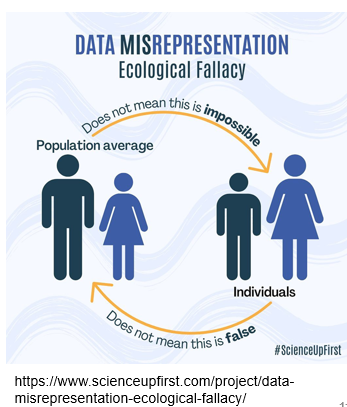
Strengths
Uses existing population-level data
Efficient: fast and low cost
Useful when individual-level data are unavailable
Limitations
Ecologic fallacy
Crude exposure measurement
Limited control of confounding
Study
Sasaki et al. (1993): dietary fat intake & breast cancer mortality
Unit of analysis: countries (30 countries total)
Key finding
Higher animal fat intake was associated with higher breast cancer mortality
Fish fat intake was associated with lower breast cancer mortality
Discussion prompts
What makes this study feasible and efficient?
Why can these results not be interpreted at the individual level?
What other population-level factors could explain the association?
Sasaki S, Horacsek M, Kesteloot H. An ecological study of the relationship between dietary fat intake and breast cancer mortality. Prev Med. 1993 Mar;22(2):187-202. doi: 10.1006/pmed.1993.1016. PMID: 8483858.
Key feature: investigator assigns exposure or intervention
Comparison: intervention group vs control group
Goal: evaluate the effect of an intervention
Two broad types
True experimental studies: include randomization
Quasi-experimental studies: no randomization, but intervention is assigned
Why they matter
Stronger control of alternative explanations
Better support for causal inference than observational designs
Key Features
A type of experimental study
Introduce a planned action to assess its impact
Conducted in real-world settings
Common examples
Medical interventions (e.g., vaccines, treatments)
Behavioral programs (e.g., smoking cessation)
Policy or community interventions (e.g., taxation, education)
Take-home message: Intervention studies evaluate whether deliberate actions change health outcomes in practice.
Experimental studies
Broad category where the investigator manipulates a condition
Often conducted in controlled settings
Example: laboratory study testing how temperature affects a biological process
Intervention studies
A type of experimental study focused on planned actions to improve health
Conducted in real-world populations
Example: introducing a vaccination program or a smoking cessation policy
Key point: All intervention studies are experimental, but not all experimental studies are health interventions.
Exercise: For each example below, decide whether it is an Experimental study or an Intervention study.
Researchers expose bacteria to different temperatures in a lab and measure growth rate.
A city introduces a new bike-lane policy to encourage physical activity and reduce injuries.
Participants are randomly assigned to receive a new medication or a placebo to evaluate treatment effectiveness.
Psychologists test whether blue or red lighting affects concentration in a controlled setting.
Hint
Which examples involve a planned action to improve health?
Which examples involve manipulation without a health intervention?
Clinical Trials
A type of intervention study conducted in humans
Participants receive a medical intervention under controlled conditions
Designed to evaluate safety and effectiveness
Common purposes
Prevention (prophylactic trials, e.g., vaccines)
Treatment (therapeutic trials, e.g., new drugs or procedures)
Key takeaway: Clinical trials provide strong evidence for whether medical interventions work and are safe.
Randomized Controlled Trials (RCTs)
A type of clinical trial
Participants are randomly assigned to intervention or control groups
Groups are comparable at baseline by design
Outcomes are measured consistently across groups
Why randomization matters
Reduces systematic differences between groups
Strengthens causal inference
Take-home message: Randomization helps isolate the effect of the intervention, making RCTs the strongest design for evaluating causality.
Randomization
Assigns participants to groups by chance
Balances known and unknown factors across groups
Occurs before outcomes are measured
What randomization does
Reduces systematic differences between groups
Minimizes alternative explanations for observed effects
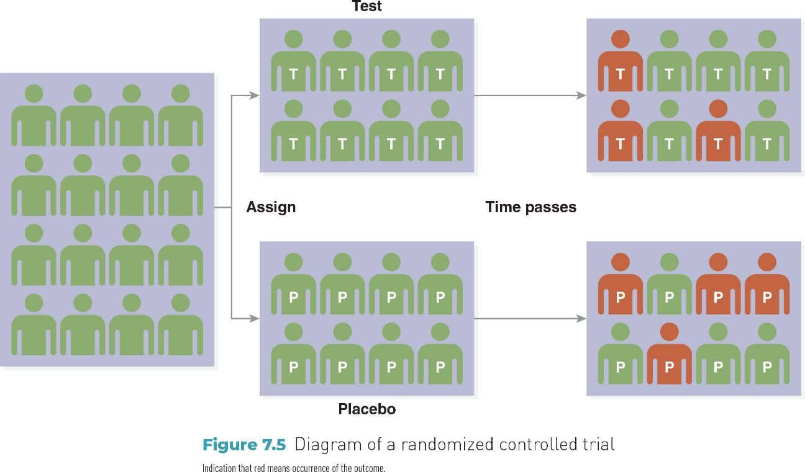
Take-home message
Randomization improves internal validity by making groups comparable at baseline.
Study overview
Large randomized controlled trial of a low-fat dietary pattern
Postmenopausal women assigned to intervention or usual diet
Long-term follow-up
Discussion prompts
Why is an RCT an appropriate design for this question?
What features of this study strengthen causal inference?
What challenges might arise in long-term behavioral interventions?
Key takeaway: RCTs strengthen causal conclusions, but feasibility, adherence, and follow-up matter.
Prentice RL, Caan B, Chlebowski RT, et al. Low-Fat Dietary Pattern and Risk of Invasive Breast Cancer: The Women’s Health Initiative Randomized Controlled Dietary Modification Trial. JAMA. 2006;295(6):629–642. doi:10.1001/jama.295.6.629
Comparing Two Studies: Think back to the two studies discussed today:
Ecologic study: dietary fat intake and breast cancer mortality
Randomized controlled trial: low-fat dietary intervention
Discussion questions
What is the unit of analysis in each study?
Which study provides stronger evidence for causality, and why?
What kinds of conclusions are appropriate for each design?
Strengths
Randomization improves group comparability
Strong internal validity
Best design for evaluating causal effects of interventions
Limitations
Often expensive and time-consuming
May have limited generalizability to real-world populations
Not always ethical or feasible
Review:
Ecologic study: dietary fat & breast cancer mortality
RCT: low-fat dietary intervention
Quick question
Follow-up
Key idea: Even strong study designs have limitations. That leads us to validity.
Even well-designed studies can produce misleading results.
Two central questions:
External validity: Can the findings be generalized to other populations or settings?
Internal validity: Is the observed association likely to reflect a true causal relationship?
If validity is compromised, conclusions may reflect:
Random error (chance)
Systematic error
Confounding
Key idea: Strong design does not eliminate threats to validity.
Definition: The extent to which study results can be generalized to other populations or settings
Key influences
Sampling error: random variation
Sampling bias: systematic lack of representativeness
Guiding question: Do these results apply beyond this sample?
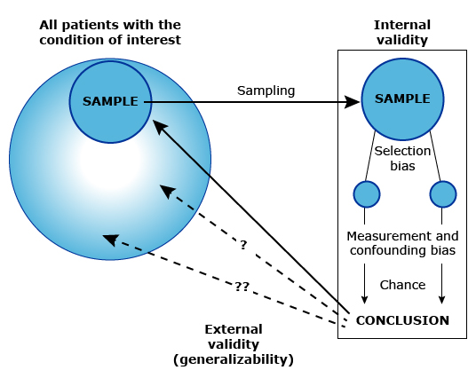
Definition: Random variation that occurs because we study a sample, not the entire population.
Key points
Occurs whenever a sample is drawn
Affects the precision of estimates
Not a design flaw — a natural result of sampling
How to reduce it: Increase sample size
Example
If the true population smoking rate is 20%,
A sample of 50 people might estimate 16% or 24% due to chance.
Key takeaway: Sampling error reflects random variation, not systematic bias.
Definition: A systematic error that occurs when the sample is not representative of the target population.
Key points
Results from how participants are selected
Affects both generalizability and potentially conclusions
Unlike sampling error, it does not disappear with larger sample size
Example
Key takeaway: Sampling bias threatens external validity because the sample does not reflect the population of interest.
Random Error (Chance)
Natural variability in data
Directly affects precision (spread of estimates)
Reduced by increasing sample size
Systematic Error (Bias)
Flaws in design, selection, or measurement
Affects accuracy (closeness to the truth)
Not corrected by larger sample size
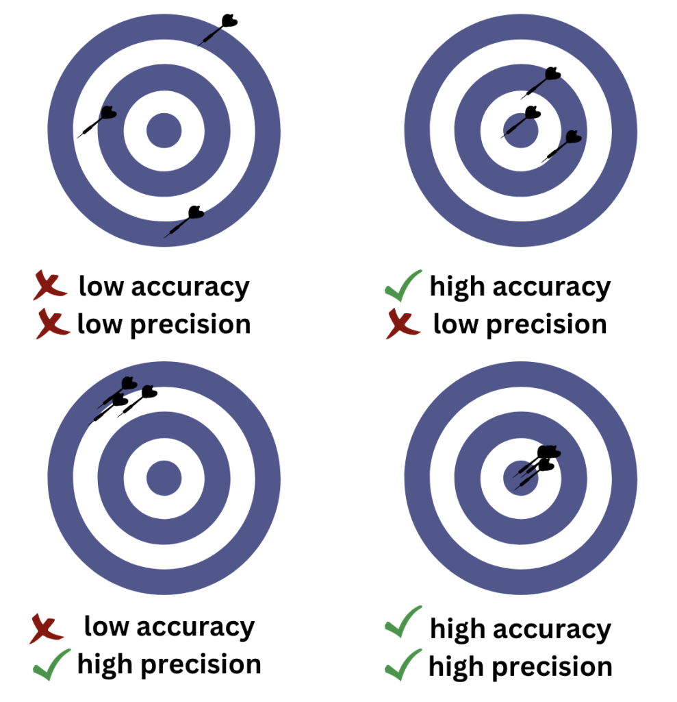
For each scenario, decide: Random error (chance) or Systematic error (bias)
A random sample of 40 students is used to estimate smoking prevalence on campus. The study finds 16% prevalence, while the true campus rate is 20%.
In a survey about alcohol use, participants are asked face-to-face by a researcher. Many participants report lower drinking levels than expected.
In a cohort study of pesticide exposure and Parkinson’s disease, more participants in the exposed group drop out during follow-up than in the unexposed group.
Blood pressure is measured using two different devices. One device consistently gives readings 5 mmHg higher than the other.
Definition: A systematic error in the design, conduct, or measurement of a study that distorts the true association.
Key features
Shifts results in a consistent direction
Affects accuracy, not precision
Not corrected by increasing sample size
Two major categories
Selection bias
Information bias
Key idea: Bias creates a misleading estimate of the exposure–outcome relationship.
Definition: A systematic error caused by differences in who enters or remains in the study.
How it occurs
Differences in participant selection
Differences in participation or refusal
Differences in loss to follow-up
Key idea: When the groups being compared differ because of the selection or retention process, the association may be distorted.
Self-selection bias: Participation or refusal is related to exposure or outcome
Healthy worker effect: Workers tend to be healthier than the general population
Control selection bias: In case-control studies, controls do not represent the source population
Loss to follow-up (attrition bias): In cohort studies, dropout differs between exposure groups
Key idea: Selection bias occurs when group differences arise from who enters or remains in the study.
Definition
A systematic error caused by inaccurate or inconsistent measurement of exposure or outcome.
How it occurs
Differences in how information is reported
Differences in how information is collected
Differences in how information is recorded
Key idea: When exposure or outcome data differ between groups, the association may be distorted.
Definition: A type of information bias in which participants remember past exposures differently.
When it occurs
Often in case-control studies
Cases may recall exposures more carefully than controls
Key idea: Differences in memory between groups can distort the exposure–outcome association.
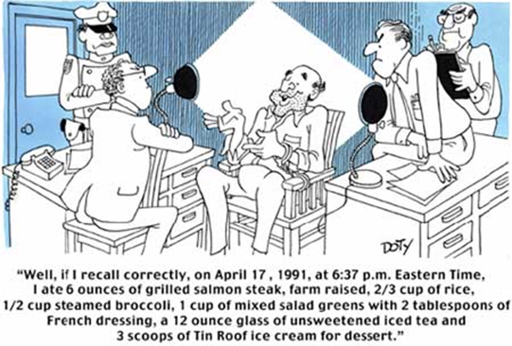
Interviewer Bias
Occurs during data collection
Interviewer knowledge influences how questions are asked
Can lead to different responses between groups
Observer Bias
Occurs during outcome assessment
Observer expectations influence how outcomes are recorded
More likely when blinding is absent
Key idea: When researchers influence data collection or measurement, results may be systematically distorted.
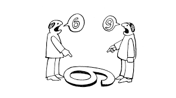
Definition: participants provide responses that are viewed as socially acceptable rather than accurate.
When it occurs
Sensitive behaviors (e.g., smoking, alcohol use, drug use)
Self-reported health behaviors or lifestyle factors
Key idea: When participants modify responses to appear favorable, exposure or outcome data may be systematically distorted.
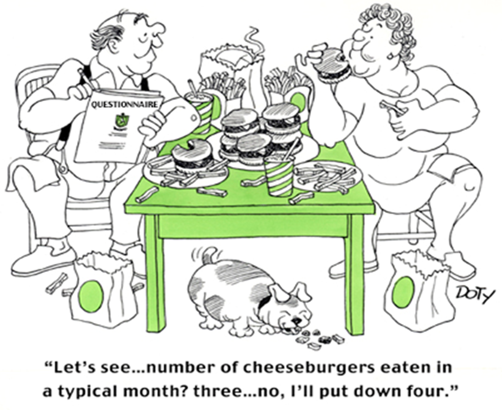
Definition: participants change behavior because they know they are being observed.
When it occurs
During clinical trials or behavioral studies
When participants are monitored or aware of measurement
Key idea: when behavior changes due to observation, the measured exposure or outcome may not reflect usual behavior.
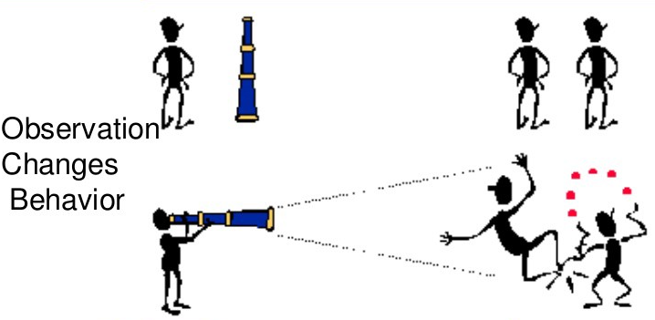
For each scenario, identify the most likely type of information bias and explain why.
In a case-control study, parents of sick children recall pesticide exposure during pregnancy more carefully than parents of healthy children.
Participants report lower alcohol use in face-to-face interviews than expected from sales data.
In a clinical trial, outcome assessors know which participants received the treatment and rate them more favorably.
Interviewers ask more detailed exposure questions to lung cancer cases than to controls.
Participants increase exercise levels during a study because they know their activity is being monitored.
Reducing Selection Bias
Use appropriate comparison groups
Apply clear and consistent inclusion criteria
Minimize loss to follow-up
Ensure recruitment is not related to both exposure and outcome
Reducing Information Bias
Use standardized definitions and procedures
Apply blinding when possible
Collect data consistently across groups
Use validated measurement tools
Key idea: Careful design and consistent measurement strengthen internal validity.
How to identify a confounder
Associated with the exposure
Independently associated with the outcome
Not caused by the exposure
Example
Key idea: If a third variable meets these criteria, the observed association may not reflect a true causal relationship.
Scenario
Confounder: Smoking
Associated with alcohol use
Independently associated with lung cancer
Not caused by alcohol use
Effect
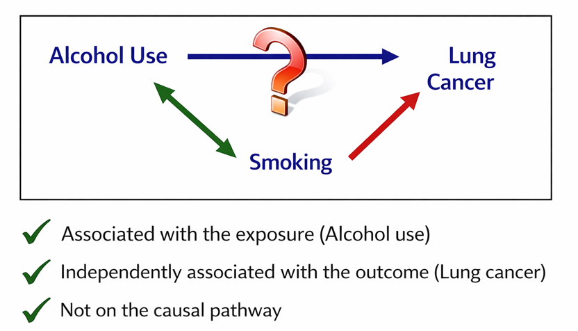
For each scenario, decide whether the association could be explained by confounding. Identify a possible confounder and explain why.
Scenario 1: A study finds that people who carry lighters have a higher risk of lung cancer.
What third variable might explain this association?
Does it meet the criteria for a confounder?
Scenario 2: A study finds that children who sleep with the light on are more likely to develop myopia (nearsightedness).
What third variable might explain this association?
Does it meet the criteria for a confounder?
Confounding cannot be ignored when interpreting results.
Randomization helps balance confounders between groups
In observational studies, researchers must identify and measure potential confounders
Results should be interpreted cautiously if important confounders are not accounted for
Key idea: If confounding is not addressed, an observed association may not reflect a true causal relationship.
Causal inference depends on:
Study design
Observational vs experimental
Ecologic vs RCT
Validity
External validity
Internal validity
Threats to internal validity
Chance
Selection bias
Information bias
Confounding
Key message: Strong conclusions require both good design and strong validity.
Get started!